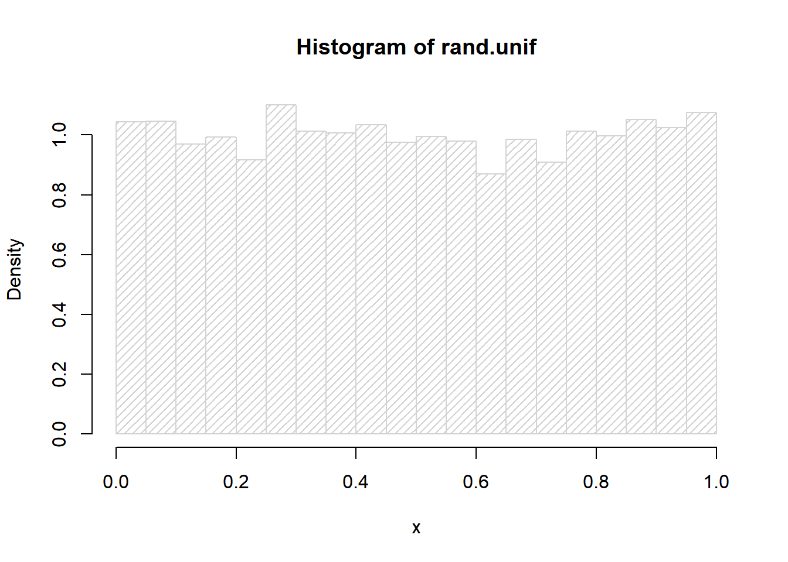
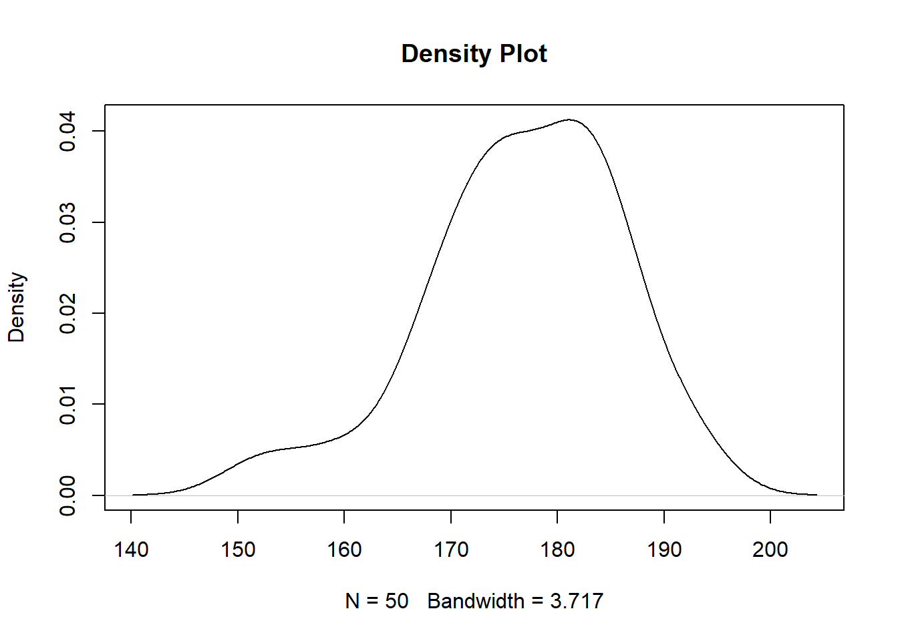

Chapter 4 Basic Statistics
Statistics is the study of how best to collect, analyze, and draw conclusions from data. A strong foundation will serve you well, no matter what industry you work in. This section describes basic (and not so basic) statistics.
4.1 Generate data
Height(cm) of 50 males and 50 females are estimated from https://dqydj.com/height-percentile-calculator-for-men-and-women/).
set.seed(1)Set the seed to the random number generation to be 1. This ensures the results are reproducible across everyone’s execution.
rnorm() rnorm.X generates multivariate normal random variates.
set.seed(1)
male_height = rnorm(n = 50, mean = 175.6, sd = 11)
female_height = rnorm(n = 50, mean = 161.5, sd = 10.5)We can keep only two decimal places using round().
Check the number of elements in the vector.
## [1] 50Get basic information about the vector (minimum, maximum and quantiles) using summary() .
## Min. 1st Qu. Median Mean 3rd Qu. Max.
## 151.2 171.5 177.0 176.7 183.6 193.2## Min. 1st Qu. Median Mean 3rd Qu. Max.
## 142.6 155.5 162.7 162.7 167.9 186.7Specific functions for Mean, Median, Minimum, Maximum, Standard deviation, Variance, Sum are shown below:
mean(), median(), min(), max(), sd(), var(), sum()The R software provides access to the uniform distribution, runif() function generates random deviates of the uniform distribution and is written as runif(n, min = 0, max = 1). We may easily generate n number of random samples within any interval, defined by the min and the max argument.
Example: approximate the density function for X∼U(0,1)
 If we have another record about weight for the same group of people, we can group weight and height data together into a list(assuming weight has correlation with height).
set.seed(1)
male_weight = 0.52*male_height + runif(n = 50, min = -15, max = 15)
male_weight = round(male_weight, 2)
female_weight = 0.48*female_height + runif(n = 50, min = -14, max = 14)
female_weight = round(female_weight, 2)Make a group Weight data and height data together.
4.2 Statistical analysis
Correlation: check the correlation between height and weight in male group and female group.
## [1] 0.5744616## [1] 0.5912873t.test(): test if there is a significant difference between the means of height&weight in the male group and female group.
##
## Welch Two Sample t-test
##
## data: male_group$height and female_group$height
## t = 7.2232, df = 96.91, p-value = 1.158e-10
## alternative hypothesis: true difference in means is not equal to 0
## 95 percent confidence interval:
## 10.13345 17.81215
## sample estimates:
## mean of x mean of y
## 176.7044 162.7316##
## Welch Two Sample t-test
##
## data: male_group$weight and female_group$weight
## t = 7.6802, df = 97.411, p-value = 1.249e-11
## alternative hypothesis: true difference in means is not equal to 0
## 95 percent confidence interval:
## 10.87635 18.45605
## sample estimates:
## mean of x mean of y
## 92.8642 78.1980fisher.test(): test the proportions of people with obesity in male group and female group have significant difference or not.
Calculate BMI using equation BMI = weight(kg)/height(m)^2
male_BMI = male_group$weight/(male_group$height/100)^2
female_BMI = female_group$weight/(female_group$height/100)^2For people with BMI equal or larger than 30, define them as having obesity.
male_obesity = ifelse(male_BMI >= 30, "Yes", "No")
female_obesity = ifelse(female_BMI >= 30, "Yes", "No")Get the number of people with obesity in each group and summary in a matrix.
male_num = table(male_obesity)
female_num = table(female_obesity)
obesity_num = rbind(male_num, female_num)Fisher’s exact test:
##
## Fisher's Exact Test for Count Data
##
## data: obesity_num
## p-value = 0.6865
## alternative hypothesis: true odds ratio is not equal to 1
## 95 percent confidence interval:
## 0.3282065 1.8624128
## sample estimates:
## odds ratio
## 0.78454154.3 Some Basic Plots
Histogram plot
 Density plot
Density plot
 Combine histogram plot and density plot using
Combine histogram plot and density plot using lines()
The lines( ) function adds information to a graph. It can not produce a graph on its own. Usually it follows a plot(x, y) command that produces a graph.
hist(male_group$height, freq = FALSE, main = "Histogram and Density")
lines(density(male_group$height), col = "red") Boxplot of height in male group and female group
Boxplot of height in male group and female group

4.4 Example 1
This exercise uses the PlantGrowth data set to demonstrate how to: 1. select / filter a value in a dataframe 2. plot density plot 3. Perform t test
## weight group
## 1 4.17 ctrl
## 2 5.58 ctrl
## 3 5.18 ctrl
## 4 6.11 ctrl
## 5 4.50 ctrl
## 6 4.61 ctrl
## 7 5.17 ctrl
## 8 4.53 ctrl
## 9 5.33 ctrl
## 10 5.14 ctrl
## 11 4.81 trt1
## 12 4.17 trt1
## 13 4.41 trt1
## 14 3.59 trt1
## 15 5.87 trt1
## 16 3.83 trt1
## 17 6.03 trt1
## 18 4.89 trt1
## 19 4.32 trt1
## 20 4.69 trt1
## 21 6.31 trt2
## 22 5.12 trt2
## 23 5.54 trt2
## 24 5.50 trt2
## 25 5.37 trt2
## 26 5.29 trt2
## 27 4.92 trt2
## 28 6.15 trt2
## 29 5.80 trt2
## 30 5.26 trt2Extract weight of control and treatment groups and name them as ctrl_grp and trt1_grp.
ctrl_grp <- PlantGrowth[PlantGrowth[, 2] == "ctrl",1]
trt1_grp <- PlantGrowth[PlantGrowth[, 2] == "trt1",1]Plot density.
plot(density(ctrl_grp), main = "Control Group vs Treatment 1", xlab = "weight", xlim = c(2.5,7.5), ylim = c(0,0.65))
par(new = TRUE)
plot(density(trt1_grp), main = "", axes = FALSE, xlab = "", ylab = "", lty = 2, xlim = c(2.5,7.5), ylim = c(0,0.65)) Run t test.
Run t test.
##
## Welch Two Sample t-test
##
## data: ctrl_grp and trt1_grp
## t = 1.1913, df = 16.524, p-value = 0.2504
## alternative hypothesis: true difference in means is not equal to 0
## 95 percent confidence interval:
## -0.2875162 1.0295162
## sample estimates:
## mean of x mean of y
## 5.032 4.6614.5 Example 2
This exercise demonstrates how to use apply and tapply to summarize information from a table. More information of apply functions can be found in 3.1.
Using apply() to get the mean and sd on every column
Using tapply() to get the maxmimum mpg per vs type
Filtering
Using grep() to select names with Merc
## mpg cyl disp hp drat wt qsec vs am gear carb
## Merc 240D 24.4 4 146.7 62 3.69 3.19 20.0 1 0 4 2
## Merc 230 22.8 4 140.8 95 3.92 3.15 22.9 1 0 4 2
## Merc 280 19.2 6 167.6 123 3.92 3.44 18.3 1 0 4 4
## Merc 280C 17.8 6 167.6 123 3.92 3.44 18.9 1 0 4 4
## Merc 450SE 16.4 8 275.8 180 3.07 4.07 17.4 0 0 3 3
## Merc 450SL 17.3 8 275.8 180 3.07 3.73 17.6 0 0 3 3
## Merc 450SLC 15.2 8 275.8 180 3.07 3.78 18.0 0 0 3 3combining tapply() and apply().
## mpg cyl disp hp drat wt qsec
## 3 241.6 112 4894.5 2642 46.99 58.389 265.38
## 4 294.4 56 1476.2 1074 48.52 31.400 227.58
## 5 106.9 30 1012.4 978 19.58 13.163 78.20Using filter to select disp larger than 200.
## mpg cyl disp hp drat wt qsec vs am gear carb
## Hornet 4 Drive 21.4 6 258.0 110 3.08 3.215 19.44 1 0 3 1
## Hornet Sportabout 18.7 8 360.0 175 3.15 3.440 17.02 0 0 3 2
## Valiant 18.1 6 225.0 105 2.76 3.460 20.22 1 0 3 1
## Duster 360 14.3 8 360.0 245 3.21 3.570 15.84 0 0 3 4
## Merc 450SE 16.4 8 275.8 180 3.07 4.070 17.40 0 0 3 3
## Merc 450SL 17.3 8 275.8 180 3.07 3.730 17.60 0 0 3 3
## Merc 450SLC 15.2 8 275.8 180 3.07 3.780 18.00 0 0 3 3
## Cadillac Fleetwood 10.4 8 472.0 205 2.93 5.250 17.98 0 0 3 4
## Lincoln Continental 10.4 8 460.0 215 3.00 5.424 17.82 0 0 3 4
## Chrysler Imperial 14.7 8 440.0 230 3.23 5.345 17.42 0 0 3 4
## Dodge Challenger 15.5 8 318.0 150 2.76 3.520 16.87 0 0 3 2
## AMC Javelin 15.2 8 304.0 150 3.15 3.435 17.30 0 0 3 2
## Camaro Z28 13.3 8 350.0 245 3.73 3.840 15.41 0 0 3 4
## Pontiac Firebird 19.2 8 400.0 175 3.08 3.845 17.05 0 0 3 2
## Ford Pantera L 15.8 8 351.0 264 4.22 3.170 14.50 0 1 5 4
## Maserati Bora 15.0 8 301.0 335 3.54 3.570 14.60 0 1 5 8